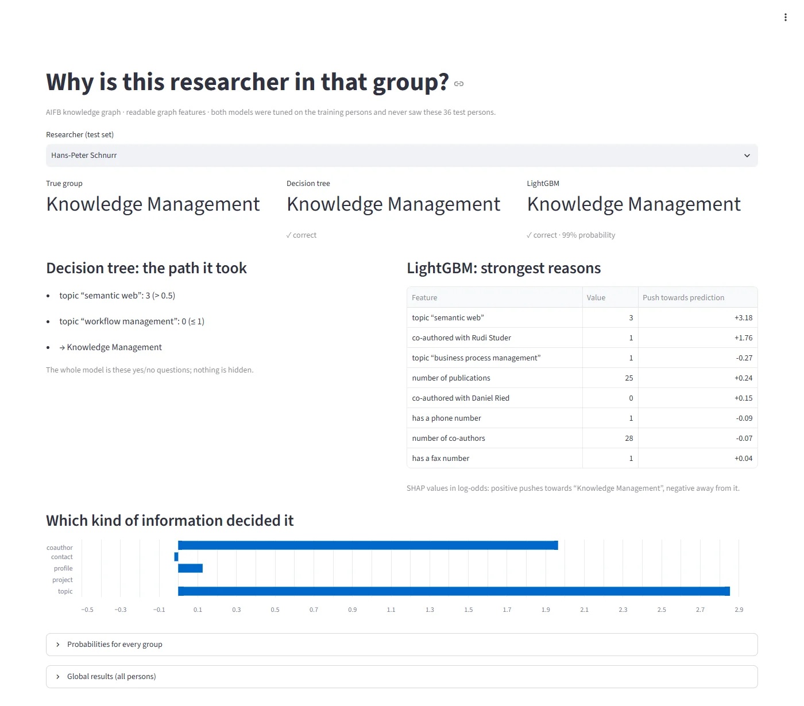

01Problem
The AIFB knowledge graph describes the people, publications, projects and research topics of an institute at KIT. The task is to predict which of four research groups each of 176 labelled researchers belongs to, and to explain why.
The four groups are Business Information and Communication Systems, Efficient Algorithms, Knowledge Management and Complexity Management. The standard split is 140 training and 36 test persons, and always guessing the largest group scores 41.7% on the test split.
The starting point was a course mini-project pipeline. It flattened the graph into a one-hot table, trained a Gradient Boosting black box (10,000 depth-1 stumps) and a depth-5 decision tree, explained them with SHAP, and reported 86.1% test accuracy.
02What the audit found
Before improving anything, I checked whether the existing numbers could be trusted. They couldn't.
| Problem | Evidence | Fix |
|---|---|---|
| Label leakage | Research groups were still linked to their own members through member and head edges: 79 triples. | Removed every direct person↔group edge (29,043 → 28,964). Tests fail if any come back. |
| Memorised identities | 140 of 479 features were person names, and 414 were non-zero for exactly one training person. Without them, Gradient Boosting fell from 86.1% to 72.2%. | Readable graph features. Values seen for fewer than 2 training persons are dropped inside every fold. |
| Lossy conversion | One value kept per subject and predicate: 2,462 of 2,586 publication links were lost, and incoming edges were ignored. | Features keep every object and use incoming edges. |
| Top feature misread | phone_ meant the phone field was empty, but was read as "has a phone". | Explicit profile features (has_phone, has_fax, …). |
| "Fidelity" wasn't fidelity | The reported 0.75 compared the black box with a tree trained on the true labels. | A real surrogate trained on the black box's predictions: fidelity 0.833. |
| Rank agreement misreported | A Spearman of 0.68 compared different methods than stated. | All method pairs, three agreement measures. |
| Thin evaluation | One 36-person split, no baseline, no interval. | Majority baseline, Wilson intervals, nested repeated CV. |
| Notebook-only code | The repo was 97% Jupyter, and SHAP plots showed "Feature 205" instead of names. | Tested .py modules, with figures generated from code. |
03Architecture
- AIFB RDF graph 8,285 nodes and 29,043 triples: persons, publications, projects and research topics.
- Leakage removal Every direct person↔group edge is removed (−79 triples). Leakage tests fail the build if any return.
-
Readable graph features
Named
family:itemin five families (profile, contact, project, topic, coauthor), e.g.topic:semantic weborcoauthor:Rudi Studer. Values of a single training person are dropped inside every fold. - Models Logistic regression, a depth-limited decision tree and LightGBM, tuned with grid search on training persons only.
- Evaluation Nested repeated cross-validation (5 folds × 3 repeats), Wilson 95% intervals and a majority baseline.
- Explanations TreeSHAP per feature, family and class, plus family ablation, a surrogate tree and permutation importance.
- Output A plain-language explanation for each person (tree path, probabilities, strongest SHAP reasons) and a live Streamlit demo.
- Reference points comparison A featureless R-GCN (PyTorch Geometric) rebuilt to the original paper's settings, and a second dataset (MUTAG) through a schema-agnostic feature builder.
04Evaluation
These rules held for every number in the project:
- Hyperparameters are tuned by cross-validation on training persons only.
- The test split is used for final numbers only.
- Every test accuracy is reported with its 95% Wilson interval, next to the CV mean ± std and the majority baseline.
- Feature filters are refit inside each fold, so feature selection can't leak.
The original black box scored 86.1% on the 36-person test split. Repeated cross-validation put it at 75.9% ± 5.5.
05Results
The interpretability trade-off turned out to be a feature problem. With readable graph features, every model improved, and the depth-5 decision tree went from the weakest model to within 3.6 points of LightGBM.
| Model | One-hot table | Graph features |
|---|---|---|
| Logistic regression | 75.0% | 87.3% |
| Decision tree | 63.4% | 86.2% |
| LightGBM | 69.7% | 89.8% |
| Model | Nested CV | Test | 95% Wilson CI | Macro F1 |
|---|---|---|---|---|
| Logistic regression | 87.3% ± 4.8 | 88.9% (32/36) | 74.7–95.6% | 0.852 |
| Decision tree | 86.2% ± 3.3 | 83.3% (30/36) | 68.1–92.1% | 0.775 |
| LightGBM | 89.8% ± 5.5 | 91.7% (33/36) | 78.2–97.1% | 0.867 |
What the decision tree learned
The tuned tree reads as six rules. Toggle a researcher's properties and watch which rule decides.
The price of readability
A featureless graph neural network, rebuilt with the original paper's settings, is the reference point. On the same leakage-free graph it beats LightGBM by 4.5 points and the decision tree by 8.1 points in cross-validation. That is the honest cost of readable features on AIFB.
| Model, leakage-free AIFB graph | CV accuracy | Protocol |
|---|---|---|
| Decision tree, graph features | 86.2% ± 3.3 | nested, 5 × 3 |
| LightGBM, graph features | 89.8% ± 5.5 | nested, 5 × 3 |
| R-GCN, featureless | 94.3% ± 3.0 | 5-fold |
The leaky edges don't explain the GNN's score: it reaches 95.5% on the standard graph, 94.3% without member/head edges and 93.8% without any group nodes. On a second dataset, MUTAG (340 molecules), generic features that know nothing about chemistry let all three classical models beat the R-GCN: LightGBM 78.4% vs 71.5%. There, the tree splits on aromatic carbon atoms and ring structures.
06Explanations
Every prediction comes with a plain-language explanation: the decision tree's path, LightGBM's strongest SHAP reasons, and which kind of graph information decided it. The live demo shows this for any of the 36 test persons.

I cross-checked the explanations with four methods. The most useful comparison was SHAP (what the model uses) against family ablation (what it needs): retrain without each feature family and see what accuracy is lost.
| Family | SHAP share |
|---|---|
| profile | 38.8% |
| topic | 33.1% |
| coauthor | 21.5% |
| contact | 6.2% |
| project | 0.4% |
| Family | Change when removed |
|---|---|
| profile | +0.4 pts |
| topic | −0.9 pts |
| coauthor | −5.7 pts |
| contact | −4.0 pts |
| project | 0.0 pts |
- What the model uses isn't what it needs. Profile has the largest SHAP share (39%), yet removing it changes accuracy by +0.4 points: topics and co-authors carry the same information.
- The families it needs are co-authors (−5.7 points without them) and contact details (−4.0).
- One shortcut remains: for Complexity Management, the smallest group,
has_photoandhas_faxare among the strongest drivers. They reflect how complete a profile is, not research. - Methods agree more on meaningful features: the top-20 overlap between SHAP and permutation importance doubled (Jaccard 0.333 → 0.667), though shared features are still ranked differently (Spearman 0.42). A depth-5 surrogate tree mimics LightGBM with 83.3% fidelity.
07Engineering
- 45 unit tests covering leakage, features, metrics, explanations, prediction and the demo, plus a 5-test model-quality gate.
- Leakage tests fail if any edge links a person directly to a research group.
- Quality gate: retrained models must reproduce the published test accuracy within one test person and stay above floors (80% for logistic regression and the tree, 85% for LightGBM, 80% nested CV).
- CI: lint → unit tests → quality gate → Docker build → tests inside the image → demo health check. In parallel, CI builds the demo image, checks that it serves and publishes it to GitHub Container Registry.
- One command rebuilds every result file and figure (about 8 minutes without the GNN). The README and the report read their numbers from those JSON files.
- Docker:
python:3.12-slim, non-root user, health check. Fixed seeds, pinned dependencies, ruff-clean code and no notebooks. - Live demo: a Streamlit app on Azure Container Apps that scales to zero and uses about 143 MiB, at no cost under a spending-limited student subscription. Explanations are precomputed by the pipeline, which cut startup on a minimal CPU share from about 178 s to 39 s and the image from 1.52 GB to 783 MB.
python -m src.pipeline # every stage, ~8 min
pytest -q -m "not quality" # unit tests
pytest -q -m quality # model-quality gate
streamlit run app/demo.py # the demoChoosing where to host the demo
I compared four options on startup time, memory and cost before picking one.
| Platform | Outcome | Measured reason |
|---|---|---|
| Hugging Face Spaces (Docker) | Not possible for free | Creating the Space returned HTTP 402. Docker Spaces on free hardware now need a paid plan. |
| Render (free tier) | Rejected | 0.1 CPU and 512 MB: fitting the models took 94 s instead of 12 s and peaked at 418 of 512 MB. |
| Streamlit Community Cloud | Tried, replaced | A minimal CPU share made startup take about 178 s, which led to the precomputed demo. |
| Azure Container Apps | Chosen | Free without a credit card (student offer), hard spending limit, scale to zero, and it runs the existing Docker image. |
08Lessons learned
-
A test score can flatter
86.1% on 36 people looked strong. Repeated cross-validation said 75.9%. With small data, the protocol matters as much as the model.
-
Readability was a feature problem
The decision tree didn't need to be replaced. It needed features named in the graph's own terms, and then it went from 63.4% to 86.2%.
-
What a model uses isn't what it needs
SHAP shares and ablation tell different stories. Using both separated real signal from redundant signal and exposed a remaining shortcut.
-
Name metrics for what they measure
Two explanation metrics in the original pipeline measured something other than their names. Fixing the definitions came before improving the numbers.
-
Choose infrastructure by measurement
Startup time and memory decided the hosting, not habit. Precomputing the explanations turned a 178-second start into a free, fast demo.
-
Report the price
A graph neural network is 8.1 points better than the tree. That belongs in the results, next to the interpretability gain.
Limitations: the 36-person test split gives wide intervals (LightGBM 78.2–97.1%), so CV is the main comparison. The GNN's CV uses 5 folds × 1 repeat for CPU-time reasons. The demo shows precomputed results for the 36 test persons and doesn't score new people.